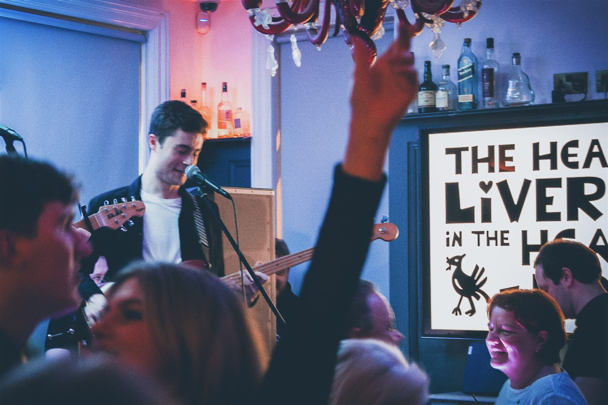
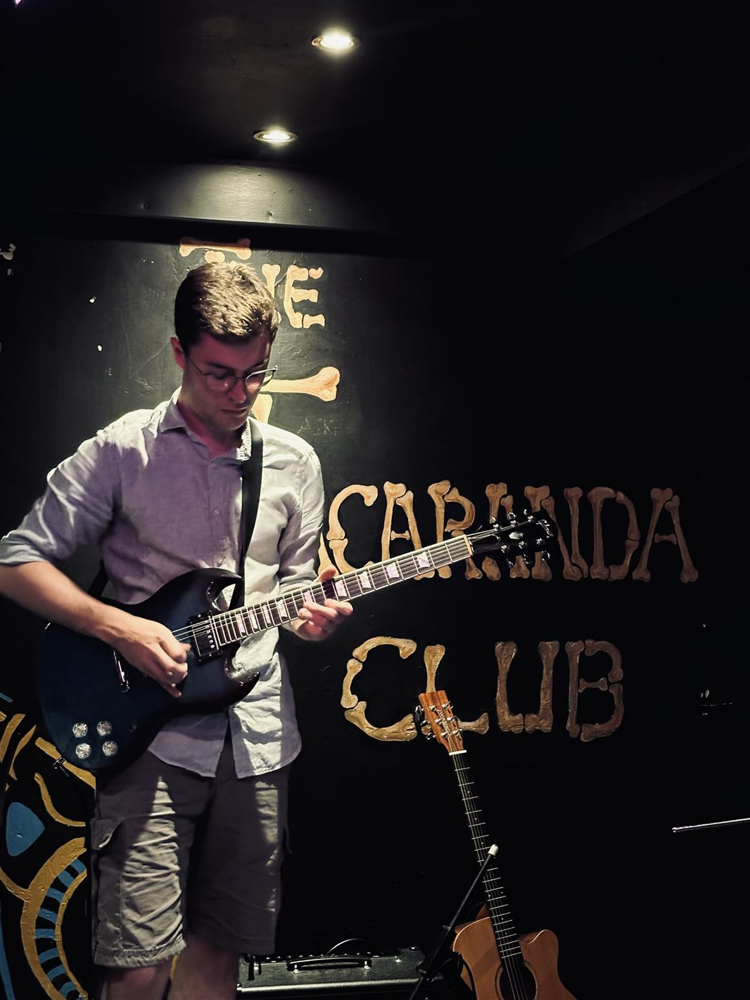
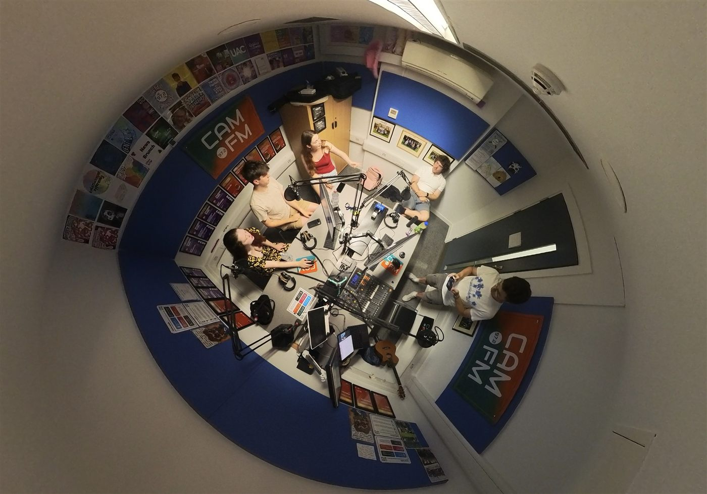

About the show
Fair warning: I will bring up bass at some point. It's not the whole show, I promise.
Hi, I'm Patrick
Thanks for stopping-by to listen to the show! I'm a second-year Geography student at Christ's College, Cambridge. I've been playing in bands since I was six, which probably explains why I somehow turned into the person at parties who won't stop talking about session musicians nobody else has heard of.
I'm from Liverpool originally, which I will absolutely bring up at every opportunity, and I chose to start A Face For Radio to prove that there's still a global love for music out there in the modern world... you just have to look a bit harder to find it! In addition, excuse to make other people listen to my music rambling on purpose, once a week, with a microphone, instead of just cornering people at parties.
A Face For Radio is a weekly music show — live every Tuesday, 9–10am on CamFM 97.2 — built around wherever the music takes us that week: new tracks, old favourites, live performances that hit different to the studio version, whatever daft or dramatic thing has happened in the music world lately, and yes, every so often, a bass player who deserves way more credit than they get.

Notices
What's Going on in A Face For Radio's Somewhat Chaotic World?
Off air
When I'm not behind the mic, I spend as much time as I can performing live in various venues across both Liverpool and Cambridge. I truly believe that live music is the greatest expression of human creativity due to its rawness and pure joy. Outside of music, I'm a massive GIS nerd (satellites and stuff, for anyone who isn't a massive geek) and I love a bit of LEGO collecting too! Oh yes... and I suppose I'm doing a degree too (which I should probably spend more time on!). In the future, I hope to engage in the direct mitigation of climate change via some sort of career related to climate science... and then potentially opening my own recording studio!

Come and listen
It's live every Tuesday 9–10am, and every episode goes up on catch-up afterwards, if you're not much of a morning person!.
